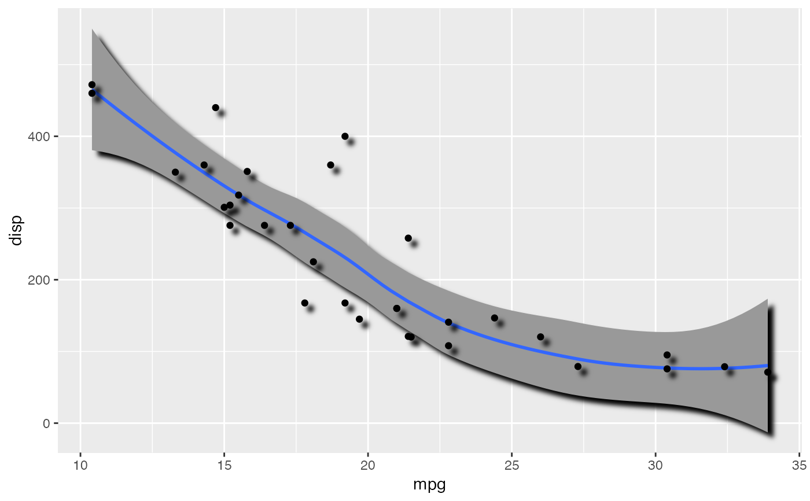
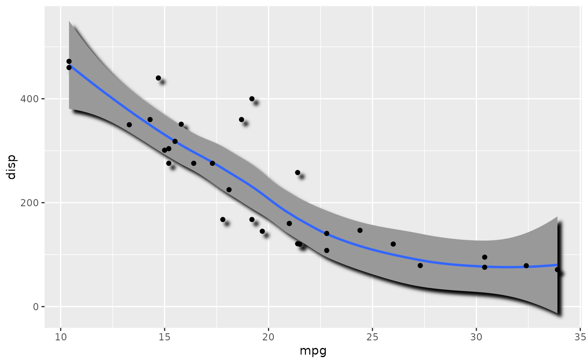

While you often want to apply filters to layers one by one, there are times
when one filter should be applied to a collection of layers as if they were
one. This can be achieved by first combining all the layers into a group with
as_group() and applying the filter to the resulting group. This can only be
done to ggplot2 layers and grobs as the other supported objects are not part
of a graphic stack.
as_group(..., id = NULL, include = is.null(id))A range of layers to combine
A string identifying this layer for later use
Should the layer itself be included in the graphic
A list of Layer objects or a gTree depending on the
input
Other layer references:
as_colourspace(),
as_reference()
library(ggplot2)
# With no grouping the filters on layers are applied one by one
ggplot(mtcars, aes(mpg, disp)) +
with_shadow(geom_smooth(alpha = 1), sigma = 4) +
with_shadow(geom_point(), sigma = 4)
#> `geom_smooth()` using method = 'loess' and formula 'y ~ x'

# Grouping the layers allows you to apply a filter on the combined result
ggplot(mtcars, aes(mpg, disp)) +
as_group(
geom_smooth(alpha = 1),
geom_point(),
id = 'group_1'
) +
with_shadow('group_1', sigma = 4)
#> `geom_smooth()` using method = 'loess' and formula 'y ~ x'
